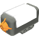

Sensor
This file contains procedures to read input from EV3 and Powered Up sensors.
Constants
The sensor module.
Source: /Users/arnovandervegt/Documents/Wheel/lib/sensor.whl, line: 10
Module calls for reading sensors.
Source: /Users/arnovandervegt/Documents/Wheel/lib/sensor.whl, line: 13
| SENSOR_SET_TYPE | 0 |
| SENSOR_GET_TYPE | 1 |
| SENSOR_SET_MODE | 2 |
| SENSOR_RESET | 3 |
| SENSOR_READ | 4 |
The different sensor types.
Source: /Users/arnovandervegt/Documents/Wheel/lib/sensor.whl, line: 20
 | SENSOR_TYPE_NXT_TOUCH | 1 |
| SENSOR_TYPE_NXT_LIGHT | 2 |
| SENSOR_TYPE_NXT_SOUND | 3 |
| SENSOR_TYPE_NXT_COLOR | 4 |
| SENSOR_TYPE_NXT_ULTRASONIC | 5 |
| SENSOR_TYPE_TOUCH | 16 |
| SENSOR_TYPE_COLOR | 29 |
| SENSOR_TYPE_ULTRASONIC | 30 |
| SENSOR_TYPE_GYRO | 32 |
| SENSOR_TYPE_INFRARED | 33 |
| | SENSOR_TYPE_NXT_TEMPERATURE | 6 |
The sensor read value is invalid.
Source: /Users/arnovandervegt/Documents/Wheel/lib/sensor.whl, line: 33
Sensor input ports.
Source: /Users/arnovandervegt/Documents/Wheel/lib/sensor.whl, line: 36
| INPUT_1 | 0 |
| INPUT_2 | 1 |
| INPUT_3 | 2 |
| INPUT_4 | 3 |
Color sensor modes.
Source: /Users/arnovandervegt/Documents/Wheel/lib/sensor.whl, line: 42
| COLOR_REFLECTED | 0 |
| COLOR_AMBIENT | 1 |
| COLOR_COLOR | 2 |
| COLOR_REFLECTED_RAW | 3 |
| COLOR_RGB_RAW | 4 |
| COLOR_CALIBRATION | 5 |
Color values.
Source: /Users/arnovandervegt/Documents/Wheel/lib/sensor.whl, line: 50
| COLOR_NONE | 0 |
| COLOR_BLACK | 1 |
| COLOR_BLUE | 2 |
| COLOR_GREEN | 3 |
| COLOR_YELLOW | 4 |
| COLOR_RED | 5 |
| COLOR_WHITE | 6 |
| COLOR_BROWN | 7 |
Button values, used for the infrared sensor.
Source: /Users/arnovandervegt/Documents/Wheel/lib/sensor.whl, line: 60
| BUTTON_0 | 0 |
| BUTTON_1 | 1 |
| BUTTON_2 | 2 |
| BUTTON_3 | 3 |
| BUTTON_4 | 4 |
| BUTTON_5 | 5 |
| BUTTON_6 | 6 |
| BUTTON_7 | 7 |
| BUTTON_8 | 8 |
| BUTTON_9 | 9 |
| BUTTON_10 | 10 |
| BUTTON_11 | 11 |
Infrared sensor modes.
Source: /Users/arnovandervegt/Documents/Wheel/lib/sensor.whl, line: 74
| ULTRASONIC_CM | 0 |
| ULTRASONIC_INCH | 1 |
| ULTRASONIC_LISTEN | 2 |
| ULTRASONIC_SI_CM | 3 |
| ULTRASONIC_SI_INCH | 4 |
| ULTRASONIC_DC_CM | 5 |
| ULTRASONIC_DC_INCH | 6 |
Gyro sensor modes.
Source: /Users/arnovandervegt/Documents/Wheel/lib/sensor.whl, line: 83
| GYRO_ANGLE | 0 |
| GYRO_RATE | 1 |
| GYRO_FAST | 2 |
| GYRO_RATE_AND_ANGLE | 3 |
| GYRO_CALIBRATION | 4 |
Infrared sensor modes.
Source: /Users/arnovandervegt/Documents/Wheel/lib/sensor.whl, line: 90
| IR_PROXIMITY | 0 |
| IR_SEEKER | 1 |
| IR_REMOTE | 2 |
| IR_REMOTE_ADVANCED | 3 |
| IR_NOT_UTILIZED | 4 |
| IR_CALIBRATION | 5 |
Procedures
sensorLayerSetType
Source: /Users/arnovandervegt/Documents/Wheel/lib/sensor.whl, line: 98
E
Set the sensor type.
proc sensorLayerSetType(number layer, number port, number type)
Parameters:
| Name | Type | Description |
|---|
| layer | number | The layer, the daisy chained device. 0 is the primary brick. |
| port | number | The input port, the first output is 0. Constants: INPUT_1, INPUT_2, INPUT_3, INPUT_4. |
| type | number | The type of sensor: SENSOR_TYPE_TOUCH, SENSOR_TYPE_COLOR, SENSOR_TYPE_INFRARED,
SENSOR_TYPE_ULTRASONIC, SENSOR_TYPE_GYRO or SENSOR_TYPE_SOUND. |
sensorLayerGetType
Source: /Users/arnovandervegt/Documents/Wheel/lib/sensor.whl, line: 109
E
P
get the sensor type.
proc sensorLayerGetType(number layer, number port)
Parameters:
| Name | Type | Description |
|---|
| layer | number | The layer, the daisy chained device. 0 is the primary brick. |
| port | number | The input port, the first output is 0. Constants: INPUT_1, INPUT_2, INPUT_3, INPUT_4. |
Return: The type of connected sensor.
sensorLayerSetMode
Source: /Users/arnovandervegt/Documents/Wheel/lib/sensor.whl, line: 119
E
P
Some sensors like the color or infrared sensor can have different modes. With this function
you can select the mode.
proc sensorLayerSetMode(number layer, number port, number mode)
Parameters:
| Name | Type | Description |
|---|
| layer | number | The layer, the daisy chained device. 0 is the primary brick. |
| port | number | The input port, the first output is 0. Constants: INPUT_1, INPUT_2, INPUT_3, INPUT_4. |
| mode | number | |
sensorLayerReset
Source: /Users/arnovandervegt/Documents/Wheel/lib/sensor.whl, line: 130
E
Reset the sensor, this function can only be used for the qyro sensor.
proc sensorLayerReset(number layer, number port)
Parameters:
| Name | Type | Description |
|---|
| layer | number | The layer, the daisy chained device. 0 is the primary brick. |
| port | number | The input port, the first output is 0. Constants: INPUT_1, INPUT_2, INPUT_3, INPUT_4. |
sensorLayerRead
Source: /Users/arnovandervegt/Documents/Wheel/lib/sensor.whl, line: 139
E
P
Read the sensor value.
proc sensorLayerRead(number layer, number port)
Parameters:
| Name | Type | Description |
|---|
| layer | number | The layer, the daisy chained device. 0 is the primary brick. |
| port | number | The input port, the first output is 0. Constants: INPUT_1, INPUT_2, INPUT_3, INPUT_4. |
Return: The sensor value.
sensorSetType
Source: /Users/arnovandervegt/Documents/Wheel/lib/sensor.whl, line: 149
E
Set the sensor type.
proc sensorSetType(number port, number type)
Parameters:
| Name | Type | Description |
|---|
| port | number | The input port, the first output is 0. Constants: INPUT_1, INPUT_2, INPUT_3, INPUT_4. |
| type | number | The type of sensor: SENSOR_TYPE_TOUCH, SENSOR_TYPE_COLOR, SENSOR_TYPE_INFRARED,
SENSOR_TYPE_ULTRASONIC, SENSOR_TYPE_GYRO or SENSOR_TYPE_SOUND. |
sensorGetType
Source: /Users/arnovandervegt/Documents/Wheel/lib/sensor.whl, line: 158
E
P
Get the sensor type from the primary device.
proc sensorGetType(number port)
Parameters:
| Name | Type | Description |
|---|
| port | number | The input port, the first output is 0. Constants: INPUT_1, INPUT_2, INPUT_3, INPUT_4. |
Return: The type of connected sensor.
sensorSetMode
Source: /Users/arnovandervegt/Documents/Wheel/lib/sensor.whl, line: 166
E
P
Some sensors line the color or infrared sensor can have different modes. With this function you
can select the mode.
proc sensorSetMode(number port, number mode)
Parameters:
| Name | Type | Description |
|---|
| port | number | The input port, the first output is 0. Constants: INPUT_1, INPUT_2, INPUT_3, INPUT_4. |
| mode | number | The sensor mode. |
sensorReset
Source: /Users/arnovandervegt/Documents/Wheel/lib/sensor.whl, line: 175
E
Reset the sensor, this function can only be used for the qyro sensor.
proc sensorReset(number port)
Parameters:
| Name | Type | Description |
|---|
| port | number | The input port, the first output is 0. Constants: INPUT_1, INPUT_2, INPUT_3, INPUT_4. |
sensorRead
Source: /Users/arnovandervegt/Documents/Wheel/lib/sensor.whl, line: 182
E
P
Read the sensor value.
proc sensorRead(number port)
Parameters:
| Name | Type | Description |
|---|
| port | number | The input port, the first output is 0. Constants: INPUT_1, INPUT_2, INPUT_3, INPUT_4. |
Return: The sensor value.
Touch, color and infrared sensor
#project "Sensor demo"
#include "lib/standard.whl"
#include "lib/screen.whl"
#include "lib/button.whl"
#include "lib/sensor.whl"
string colors[8] = ["non", "blk", "blu", "grn", "yel", "red", "wht", "brn"]
number touchValue = FALSE
number colorValue = COLOR_NONE
number infraredValue = BUTTON_0
proc drawTouchValue()
setFill(FALSE)
setFillColor(TRUE)
drawRect(27, 43, 38, 38)
setFill(TRUE)
setFillColor(touchValue)
drawRect(31, 47, 30, 30)
end
proc drawColorValue()
setFill(FALSE)
setFillColor(TRUE)
drawRect(71, 43, 38, 38)
setFill(TRUE)
setFillColor(WHITE)
drawRect(72, 44, 36, 36)
setFill(FALSE)
setFillColor(BLACK)
setTextSize(TEXT_SIZE_2)
drawText(78, 56, colors[colorValue])
end
proc drawInfraredValue()
setFill(FALSE)
setFillColor(TRUE)
drawRect(115, 43, 38, 38)
setFill(TRUE)
setFillColor(WHITE)
drawRect(116, 44, 36, 36)
setFill(FALSE)
setFillColor(BLACK)
setTextSize(TEXT_SIZE_3)
drawNumber(124, 55, infraredValue)
end
proc main()
number value
drawTouchValue()
drawColorValue()
drawInfraredValue()
sensorSetType(INPUT_1, SENSOR_TYPE_TOUCH)
sensorSetType(INPUT_2, SENSOR_TYPE_COLOR)
sensorSetType(INPUT_3, SENSOR_TYPE_INFRARED)
repeat
value = sensorRead(INPUT_1)
if value != touchValue
touchValue = value
drawTouchValue()
end
value = sensorRead(INPUT_2)
if value != colorValue
colorValue = value
drawColorValue()
end
value = sensorRead(INPUT_3)
if value != infraredValue
infraredValue = value
drawInfraredValue()
end
end
end